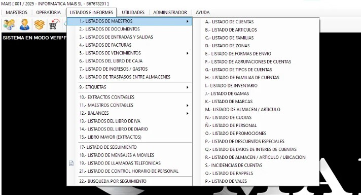

Listados e Informes
Al acceder a este apartado veremos un desplegable como este:

Este menú nos permite consultar los diferentes listados que ofrece el MAIS. Es una de las zonas más útiles para obtener información, revisar datos y generar informes.
¿Qué se puede hacer en Listados e Informes?
- Listados de Maestros (los más usados)
- Listados de Facturas
- Libros de Caja
- Listados de Ingresos y Gastos
- Listados de Artículos
- Listados de Cuentas
- Y otros informes según las necesidades de la empresa
Cada empresa seleccionará los informes que considere más útiles para su gestión diaria.
Listados de Maestros (los más utilizados)
- ✔️ Estado general de los artículos
- ✔️ Listados de clientes
- ✔️ Listados de proveedores
- ✔️ Listados de stock
- ✔️ Tarifas asignadas
- ✔️ Cuentas y datos maestros
- ✔️ Inventarios y niveles actuales de almacén
Estos listados permiten revisar rápidamente el estado de la base de datos del MAIS y verificar que todo esté actualizado.